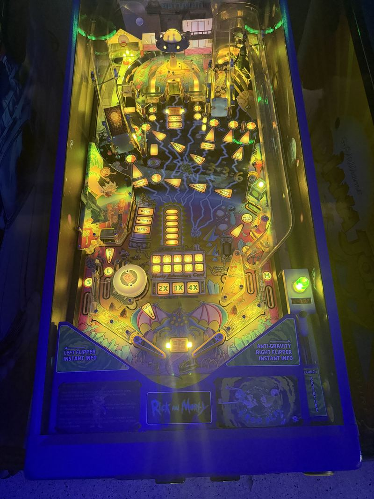

Rick and Morty
The limited Blood Sucker Edition — bought new in box, home use only, and still in its original butter cabinet.
Spooky Pinball's Rick and Morty is the machine that proved a small Wisconsin manufacturer could take one of the biggest licenses on television and do more with it than a major would have. It sold out immediately, it changes hands for absurd money, and the reason is that it is genuinely funny in a medium where licensed humor usually dies on the display.
This one is the Blood Sucker Edition — the limited run, with the alternate art package. The portal gun, the Meeseeks, the Szechuan sauce: it is all in there, and the callouts are the actual cast, which is why people keep playing after the novelty should have worn off.

Work log
Bought new in box and never on route — home use only, original owner. Nothing here needed a shop-out. Two upgrades since.
- IPS screen upgrade — Replacing the original LCD panel.
- Original butter cabinet — The factory finish, unrefinished — worth noting, because it is the thing people ask about.
Spooky Pinball
Blood Sucker Edition, limited run.
Home use only
Bought new in box. Original owner. IPS screen fitted.
Free play
In the pinball row.
More photos of Rick and Morty in the gallery →
Sources & further reading: Pinside game archive — Rick and Morty (Blood Sucker Edition)
Rick and Morty sits in the pinball row with Indiana Jones, Total Nuclear Annihilation and Ghostbusters. See the row →